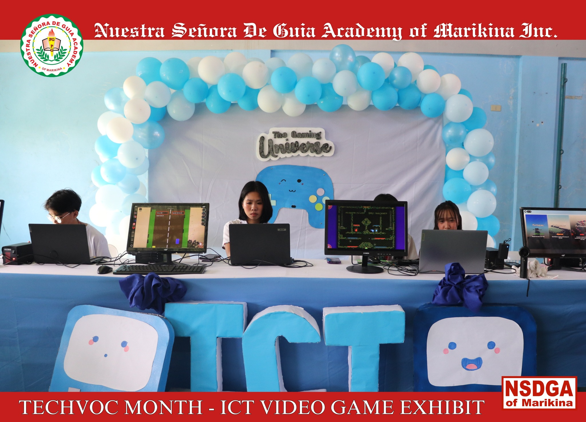
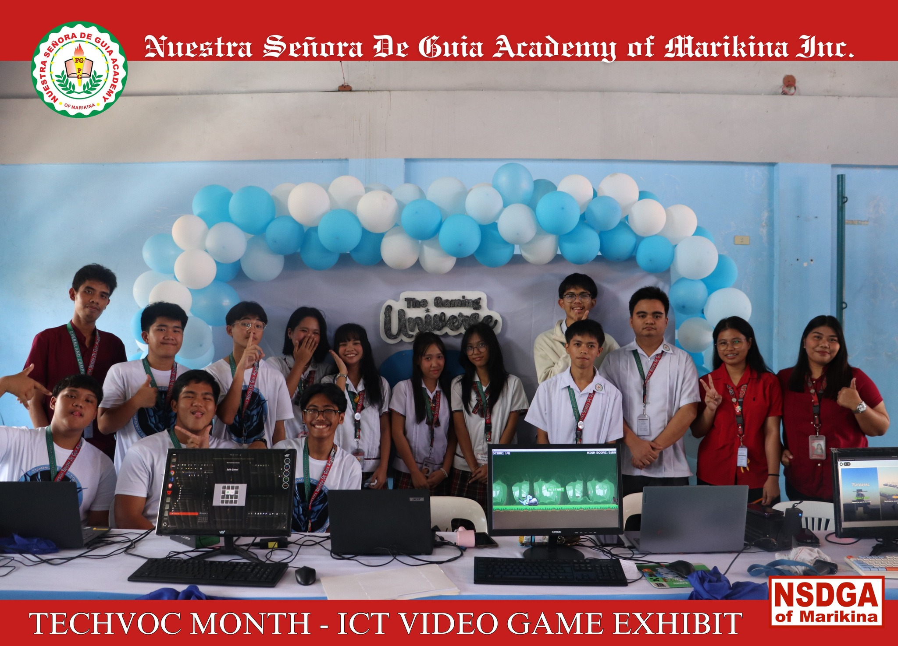
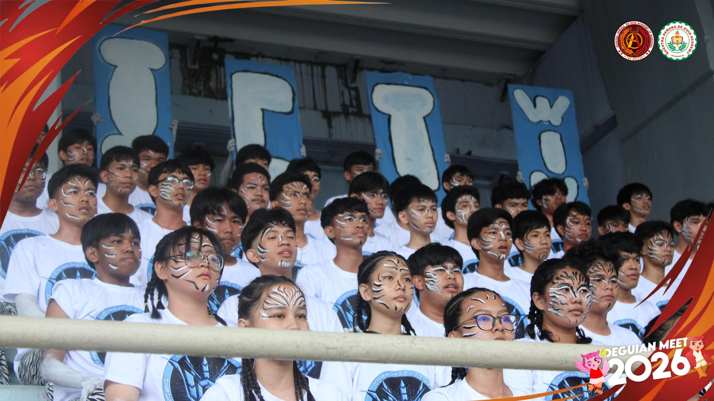
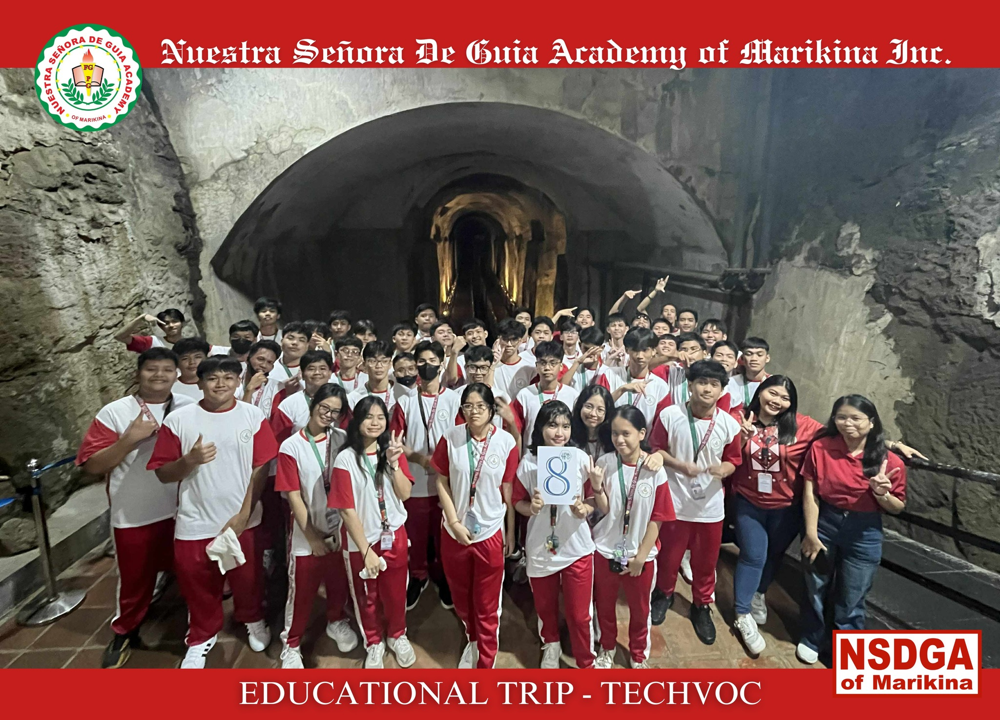

ICT
Information and Communications Technology
The ICT strand is designed for students who are interested in computers, technology, and digital innovation. It focuses on developing technical skills, creativity, and problem-solving abilities in the field of information technology.
Students study topics such as programming, web development, animation, multimedia design, and basic networking. These subjects help them understand how digital systems are created, managed, and improved.
They also engage in hands-on activities like building websites, editing videos, creating digital graphics, and developing simple applications. These tasks enhance their creativity, logical thinking, and technical skills.
The ICT strand prepares students for college courses related to information technology, computer science, and multimedia arts. It is ideal for those who enjoy working with computers, exploring new technologies, and creating digital content.
Career Paths
Students who take ICT can pursue careers such as programmer, web developer, graphic designer, IT technician, animator, game developer, or system analyst.




